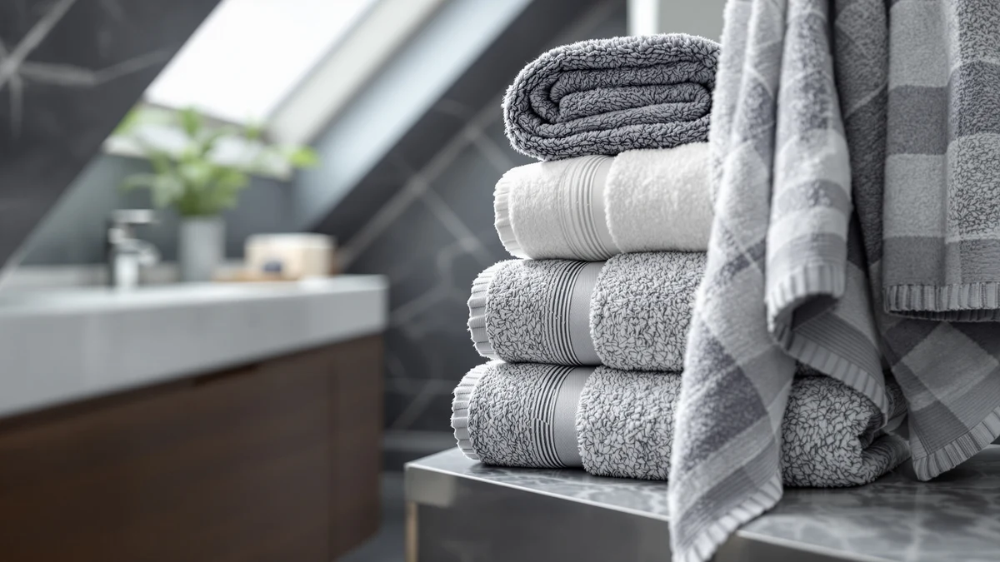

Best Bath Towel Material (2026)
Prices and picks verified as of October 2026. Independent, reader-supported reviews.


Quick Answer
For most households, 100% cotton is the best bath towel material thanks to its superior water absorption and familiar towel feel, and the Luxury White Bath Towel Set delivers that at a lower price per piece than most other cotton sets here. If faster drying matters more than plush absorbency, a microfiber set like the NALIVO is the better choice.
Our pick: Luxury White Bath Towel Set, $35.99 Check Price on Amazon
Bottom line: our top pick is the Luxury White Bath Towel Set of 8 Pieces - 100% Turkish Cotton at $39.99. The best budget option is the Utopia Towels 8 Piece Luxury Towel Set at $29.99.
Things to Know Before You Buy
- Cotton and microfiber solve different problems. Six of the seven sets we compared are 100% cotton, which absorbs more water per pass than the NALIVO set's microfiber, while microfiber dries faster on the bar between washes.
- Not all cotton towels are equal. Cotton Paradise's Turkish cotton uses longer fibers than the standard ring-spun cotton in the other sets, which tends to mean a softer hand and less lint shedding over repeated washing.
- Set size changes the real cost per towel. Utopia Towels' 8-piece set at $29.99 works out to under $4 a towel, well below the per-towel price of the smaller American Soft Linen 4-piece set.
- A stiff new towel isn't a bad material. Verified reviews across the cotton sets here mention two or three washes before the fibers relax into full softness, so judge a cotton bath towel material after it's been through the laundry, not straight out of the box.
- The right bath towel material depends on your bathroom's humidity. Cotton holds onto more water and takes longer to dry in a poorly ventilated bathroom, where a microfiber set resists the musty smell that damp cotton can develop.
The best bath towel material comes down to two real options once you cut through the marketing language: long-staple cotton for maximum absorbency, or microfiber for towels that dry fast and resist mildew between washes. Six of the seven sets in this guide are 100% cotton, and the material choice inside that category still matters almost as much as the pack size or price. We compared manufacturer specs, current Amazon pricing, and verified owner reviews across all seven towel sets to see which material earns its price tag in daily use.
White Classic's Luxury White Bath Towel Set comes out on top of this comparison. Its 100% cotton construction and 8-piece set format cover a full household's rotation at $35.99, undercutting several 6-piece sets from other brands here despite including more towels. If you want a straightforward option without a Turkish cotton premium or a microfiber tradeoff, White Classic's cotton is the best bath towel material in this guide at the lowest per-towel cost.
Not every bathroom calls for the same material, though, so we kept a spread in this guide. American Soft Linen appears twice with different set sizes, Cotton Paradise brings genuine Turkish cotton into the comparison, Tens Towels and Utopia Towels round out the standard cotton options, and NALIVO is the one microfiber set here for anyone who prioritizes quick drying over plush absorbency. Below, we break down how each set's material performs on paper and in verified reviews, followed by a side-by-side table and answers to the questions we see most about choosing a bath towel material.
Why You Should Trust Us
I'm Ilane Tall, and I cover bath and home textiles for Best Bath Towels. Comparing the best bath towel material means looking past "luxury" and "premium" labels on the package to the actual fiber content and weave listed in the specs, since two sets at the same price can use completely different cotton grades or synthetic blends.
For this guide, I did not buy or physically own these towel sets. Instead, I compared manufacturer specs, current Amazon pricing, and verified buyer reviews for each set, and cross-checked recurring complaints or praise across dozens of reviews rather than relying on the star rating alone. We earn a commission if you buy through the links on this page, but that doesn't decide which towels make this list.
How We Picked
We started with the best-selling bath towel sets on Amazon that published an actual bath towel material breakdown, a cotton percentage, a microfiber composition, or a Turkish cotton origin, rather than vague claims like "super soft" or "hotel quality." That filter alone removed a large share of listings, since plenty of towel sets skip the fiber content entirely.
That left seven sets covering the two material categories that matter most for a bathroom: 100% cotton in several pack sizes, and one microfiber set for comparison. We kept a spread of prices from $29.99 to $47.58 and pack sizes from a 4-piece set to an 8-piece set, so this guide works whether you're restocking one bathroom or furnishing a whole house.
How We Compared
We built this guide from manufacturer specs, current Amazon pricing, and verified owner reviews rather than physical ownership of each set. Comparing bath towel material this way means every claim below traces back to a documented fiber content, a listed set size, and a price checked at time of publication, cross-referenced against verified buyer feedback.
We read closely for patterns in the reviews: repeated mentions of thinning after a certain number of washes, shrinkage after the first wash, or complaints about lint shedding on dark bathroom tile. A single one-off complaint didn't disqualify a set, but a pattern across many verified reviews did, and we noted it in that pick's "Flaws but not dealbreakers" section instead of leaving it out.
Our Picks

Luxury White Bath Towel Set
What we like
- Genuine 100% cotton construction, not a cotton-poly blend hiding behind "luxury" branding
- 8-piece set covers two bath towels, two hand towels, and four washcloths in one box
- Priced under $4.50 per piece at $35.99, among the lowest per-towel cost in this material comparison
- Plain white finish matches any bathroom color scheme without clashing
Flaws but not dealbreakers
- Ring-spun cotton, not the longer-staple Turkish cotton that Cotton Paradise uses, so the hand feels slightly less plush
- Reviewers note the white color shows staining faster than a patterned or colored set
| Material | 100% cotton |
| Size | 8 Pieces Towel Set |
The Luxury White Bath Towel Set earns the top spot in this bath towel material comparison because it does the one thing a towel needs to do without complicating it with marketing language. White Classic lists the fabric plainly as 100% cotton, and the 8-piece set spreads that material across two bath towels, two hand towels, and four washcloths, giving a full bathroom rotation in a single purchase.
At $35.99, the set works out to roughly $4.50 per piece, which undercuts the per-towel cost of several 6-piece sets in this guide despite covering more items. The tradeoff against Cotton Paradise's Turkish cotton is fiber length: ring-spun cotton like this doesn't hold quite the same plush hand after repeated washing, and reviewers mention the plain white finish shows staining sooner than a patterned towel would. For a household that wants a reliable cotton bath towel material without paying a Turkish cotton premium, it remains the most straightforward option here.

American Soft Linen Luxury 6
What we like
- 100% cotton material matches the absorbency of the other cotton sets in this guide
- 6-piece set mixes bath towels, hand towels, and washcloths for a full rotation
- One of two entries from this brand here, giving a consistent material baseline against its own 4-piece set
Flaws but not dealbreakers
- At $39.99, it costs more per piece than the Luxury White Bath Towel Set despite a smaller 6-piece count
- Reviewers mention the cotton needs two or three washes before it reaches full softness
| Material | 100% cotton |
| Size | 6 Pc Towel Set |
American Soft Linen's Luxury 6-piece set uses the same 100% cotton fiber content that defines most of this guide, packaged as two bath towels, two hand towels, and two washcloths. Owners consistently report the cotton feels heavier on first use than budget sets, which tracks with the brand's positioning as a step above entry-level cotton towels.
At $39.99 for six pieces, the per-towel cost runs higher than the Luxury White Bath Towel Set's 8-piece set, so the value case here rests on weight and feel rather than raw pack size. Several verified reviews note that the cotton arrives slightly stiff and needs two or three washes with no fabric softener before the fibers relax into their full absorbency. Once broken in, reviewers describe it as noticeably thicker than the thinner cotton blends sold at a similar price.

Utopia Towels 8 Piece Luxury
What we like
- 100% cotton at $29.99 for 8 pieces, the lowest price per piece in this comparison
- Covers bath towels, hand towels, and washcloths in one purchase
- Comes from a brand built specifically around towel manufacturing, not a general home-goods label
Flaws but not dealbreakers
- Reviewers report thinner pile than the heavier American Soft Linen sets, trading some plushness for the lower price
- Lint shedding in the first few washes is a recurring note in verified reviews, though it settles after repeated laundering
| Material | 100% cotton |
| Size | 8 Pieces Towel Set |
Utopia Towels built its reputation specifically around towel manufacturing, and its 8 Piece Luxury set reflects that focus with straightforward 100% cotton fiber content at the lowest price in this guide. At $29.99 for eight pieces, it undercuts every other cotton set here on a per-towel basis, making it the pick for anyone who wants real cotton bath towel material without paying for brand positioning.
The tradeoff shows up in pile thickness: verified reviews describe the cotton as thinner than the heavier American Soft Linen sets, and a number of owners mention noticeable lint shedding during the first two or three washes. That settles down with continued laundering, and reviewers who stuck with it past the break-in period report it holds its absorbency well for the price. For a guest bathroom, rental property, or anyone replacing towels on a budget, the cotton content here does the same basic job as the pricier sets.

American Soft Linen Luxury 4
What we like
- Same 100% cotton fiber content as the brand's 6-piece set, at a different pack size
- Standard 27x54 inch dimensions fit most towel bars and linen closets without special storage
- Owners report consistent sizing across the set, with all four towels measuring true to spec
Flaws but not dealbreakers
- At $35.96 for 4 pieces, the per-towel cost runs higher than both Utopia Towels and the Luxury White Bath Towel Set
- No washcloths or hand towels included, only the four bath towels
| Material | 100% cotton |
| Size | 27x54" Bath Towel Set |
American Soft Linen's 4-piece set uses the identical 100% cotton material as the brand's 6-piece set covered earlier in this guide, packaged instead as four standard 27x54 inch bath towels without the hand towels or washcloths. For a household that already has hand towels and washcloths covered and needs only bath towels, that narrower focus avoids paying for pieces you don't need.
At $35.96, the per-towel cost comes out higher than Utopia Towels' 8-piece set or the Luxury White Bath Towel Set, since the price spreads across fewer pieces. The cotton itself performs the same as the brand's other entry here, with owners reporting consistent true-to-spec sizing across all four towels and a similar break-in period before the fibers reach full softness. It makes the most sense for replacing worn-out bath towels without restocking an entire bathroom set.

NALIVO Extra Large Bath Towel
What we like
- Microfiber construction dries faster on the towel bar than any of the cotton sets here
- Reviewers report less musty smell developing between washes compared to damp cotton
- Extra-large sizing gives more coverage per towel than the standard 27x54 inch cotton sets
Flaws but not dealbreakers
- At $47.58, it's the most expensive set in this guide despite using a synthetic material instead of cotton
- Microfiber absorbs less water per pass than cotton, so some reviewers note needing a second towel pass to fully dry off
| Material | Microfiber |
| Size | 6Piece Towel Set |
NALIVO is the one microfiber set in this bath towel material comparison, and it exists specifically for bathrooms where cotton's slow dry time becomes a problem. The synthetic microfiber weave sheds water fast during a wash cycle and dries quickly once hung, which matters in a humid climate or a bathroom without strong ventilation where damp cotton can start to smell between uses.
At $47.58, it costs more than any cotton set in this guide, and the material tradeoff is real: microfiber doesn't absorb as much water per pass as cotton, so reviewers who switch from a cotton towel often report needing an extra pass to feel fully dry. The extra-large sizing helps offset that by giving more surface area to work with, and owners in humid regions consistently mention the mildew-resistant benefit as the reason they chose microfiber over cotton in the first place.

Cotton Paradise 100% Cotton Turkish
What we like
- Turkish cotton uses longer fibers than the ring-spun cotton in most other sets here, which tends to mean a softer hand and less lint over time
- 6-piece set covers bath towels, hand towels, and washcloths
- Reviewers consistently describe the texture as noticeably plusher than standard cotton sets at a similar price
Flaws but not dealbreakers
- At $39.99, it costs more per piece than Utopia Towels' 8-piece set
- Turkish cotton takes longer to dry than the thinner ring-spun sets, a tradeoff of the denser weave
| Material | 100% cotton |
| Size | 6 Piece Towel Set |
Cotton Paradise brings genuine Turkish cotton to this bath towel material comparison, rather than the ring-spun cotton that makes up most of the other sets here. Turkish cotton uses longer fibers, which translates into a softer hand and better resistance to the lint shedding that shorter-fiber cotton can develop over repeated washing.
At $39.99 for six pieces, the price sits in the middle of this guide, cheaper than NALIVO's microfiber set but above Utopia Towels' 8-piece value pick. Reviewers who compare it directly against standard cotton towels consistently describe the texture as plusher, though the denser Turkish cotton weave does take longer to dry than the thinner ring-spun options. For anyone chasing a hotel-quality feel without hotel-supply prices, this is the material upgrade in this guide worth the extra cost.

Tens Towels Pack of 4
What we like
- Oversized 30x60 inch dimensions give more coverage than the standard-size cotton towels in this guide
- 100% cotton material matches the absorbency of the other cotton picks
- Reviewers report the larger size wraps fully around an adult frame without the gaps a standard towel can leave
Flaws but not dealbreakers
- At $35.99 for 4 pieces, the per-towel cost runs similar to the smaller American Soft Linen 4-piece set despite the larger size
- The bigger dimensions take up more space on a towel bar and in a linen closet than standard-size towels
| Material | 100% cotton |
| Size | 30 X 60 Inches |
Tens Towels sells its Pack of 4 in an oversized 30x60 inch cut, using the same 100% cotton material as most of this guide but in a larger format than the standard 27x54 inch size. For taller users or anyone who finds a standard bath towel doesn't fully wrap around after a shower, the extra length and width close that gap without switching materials.
At $35.99, the price lands close to American Soft Linen's 4-piece set, but the larger dimensions mean you're paying a similar per-towel rate for more fabric. Reviewers consistently mention the oversized cut as the main reason they bought it, noting it covers a full adult frame the way a standard-size cotton towel sometimes can't. The tradeoff is storage: the bigger towels take up more room on a towel bar or folded in a linen closet than the standard-size cotton sets covered earlier.
Quick Comparison
The table below lines up every set in this guide side by side on bath towel material, price, and best use.
| Product | Material | Price | Rating | Best for | Get it |
|---|---|---|---|---|---|
| Luxury White Bath Towel Set | 100% cotton | $35.99 | 4 | Straightforward cotton value | View on Amazon → |
| American Soft Linen Luxury 6 | 100% cotton | $39.99 | 4 | Heavier cotton feel | View on Amazon → |
| Utopia Towels 8 Piece Luxury | 100% cotton | $29.99 | 4 | Lowest cost per cotton towel | View on Amazon → |
| American Soft Linen Luxury 4 | 100% cotton | $35.96 | 4 | Bath-towel-only cotton restock | View on Amazon → |
| NALIVO Extra Large Bath Towel | Microfiber | $47.58 | 4 | Fast-drying microfiber | View on Amazon → |
| Cotton Paradise 100% Cotton Turkish | 100% cotton | $39.99 | 4 | Turkish cotton softness | View on Amazon → |
| Tens Towels Pack of 4 | 100% cotton | $35.99 | 4 | Oversized cotton coverage | View on Amazon → |
What is the best bath towel material overall?
For most households, 100% cotton is the best bath towel material because it absorbs more water per pass than microfiber.
Is microfiber or cotton better for bath towels?
Cotton absorbs more water per pass and feels closer to a traditional towel, while microfiber like the NALIVO set in this guide dries faster and resists the musty smell that damp cotton can develop in a humid bathroom.
The Competition
Several categories of bath towel material didn't make this comparison, and the reasons come down to what these seven sets already cover well.
Bamboo and bamboo-blend towels. Bamboo fiber towels market themselves as an eco-friendly alternative, but verified reviews across several bamboo brands mention the fabric thinning faster than cotton or microfiber after repeated washing, so we left the category out of a guide built around durability. Our bamboo vs. cotton comparison covers that tradeoff directly.
Egyptian cotton sets priced above $60 per towel. Premium long-staple Egyptian cotton towels often double the per-towel cost of Cotton Paradise's Turkish cotton set here, and the softness gain doesn't scale with the price jump for most households. If ultra-plush cotton is the priority, our Egyptian cotton bath towels guide covers that category on its own.
Cotton-polyester blends marketed as "quick-dry cotton." A number of listings blend a small percentage of polyester into cotton and market the result as the best of both materials. Verified reviews on several of these blends mention the polyester content pilling faster than either pure cotton or pure microfiber, so we excluded them in favor of the single-material sets in this guide.
Frequently Asked Questions
What is the best bath towel material overall?
For most households, 100% cotton is the best bath towel material because it absorbs more water per pass than microfiber. Among the cotton sets in this guide, the Luxury White Bath Towel Set from White Classic offers the lowest per-towel cost at $35.99 for eight pieces.
Is microfiber or cotton better for bath towels?
Cotton absorbs more water per pass and feels closer to a traditional towel, while microfiber like the NALIVO set in this guide dries faster and resists the musty smell that damp cotton can develop in a humid bathroom. Neither wins outright; the better bath towel material depends on how quickly you need a towel to dry between uses.
What is the difference between Turkish cotton and regular cotton towels?
Turkish cotton, like the material Cotton Paradise uses, has longer fibers than the ring-spun cotton found in most standard towel sets, which gives it a softer hand and less lint shedding over time. The tradeoff is a denser weave that takes slightly longer to dry than thinner ring-spun cotton.
How many times should I wash new cotton towels before they reach full softness?
Verified reviews across the cotton sets in this guide consistently mention two to three washes without fabric softener before the fibers relax into full absorbency and softness. Fabric softener coats cotton fibers with a residue that works against this process.
Does bath towel material affect how fast mildew forms?
Yes. Cotton holds onto moisture longer than microfiber, so a damp cotton towel left bunched on a hook in a poorly ventilated bathroom is more likely to develop a musty smell. Microfiber sets like NALIVO's dry fast enough to avoid that problem in most humid climates.
Related Guides
If you're still weighing bath towel material against a specific material matchup or buying guide, these related pages dig deeper.